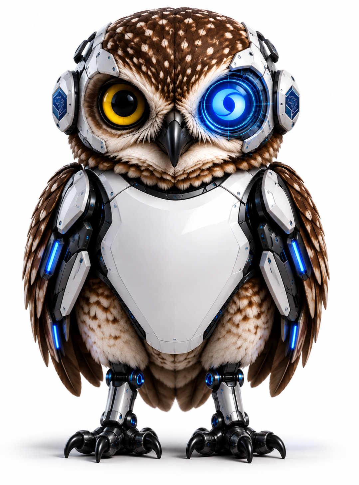

Ligue o microfone. Fale naturalmente. Ela acompanha você.

Permita o acesso e fale. Ajuste a sensibilidade até o bico acompanhar sua voz.
Os controles somem e a coruja ocupa o palco. Use Esc para voltar.
Na reunião, escolha Compartilhar e selecione a janela do navegador com a coruja.
O site anima a coruja; sua voz é transmitida pelo Teams. Cada apresentador pode abrir o site e usar o próprio microfone.